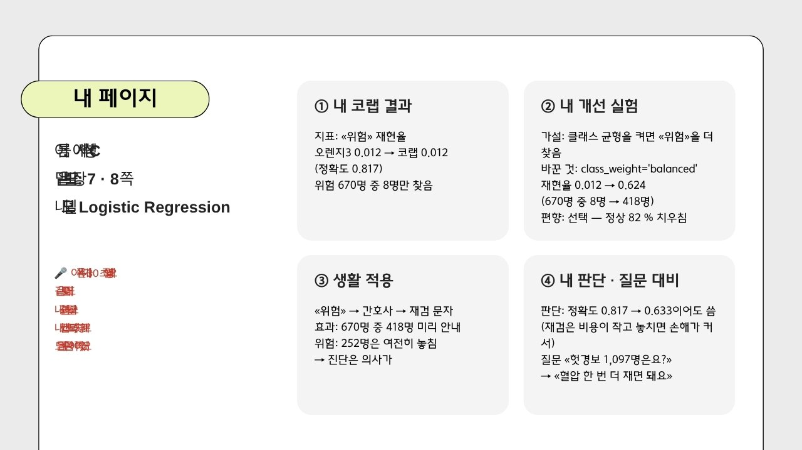

🧒 3차시 오늘 할 일
이 순서대로만 하면 돼요 · 예시 = 건강검진 «혈압 지킴이»(숫자는 실제로 돌린 값) ⭐ 오늘 가장 중요한 건 ③ 하나만 바꿔 보기1
열기
0–3분📋 다음 시간 먼저 — 내 노트북 점검
🔑 화면에 이 빨간 상자가 있으면 이것부터 해요.
🔑 화면에 이 빨간 상자가 있으면 이것부터 해요.
🧮 혼동 행렬 (Confusion Matrix)
예측 위험 예측 정상
실제 위험 8 662
실제 정상 12 2992- 혼동 행렬이 보이면 → 자리에서 2번으로
- 혼동 행렬이 안 보이면 → 노트북 들고 뒤쪽 도움 자리로 (감점 없어요)
2
숫자 하나 찾기
3–8분 · 5분만정확도 (CA) : 0.817
«위험» 재현율 (Recall) : 0.012 ← 670개 중 8개 찾음
«위험» 정밀도 : 0.400⬇ 7절 «평가» 첫 줄에 옮겨 쓰기
📝 7. 판단 근거 — 평가
✎ 우리 모델의 ‹위험› 재현율은 0.012이다.- 분류 = «놓치면 안 되는 값» 재현율 · 예측 = MAE
- 이 숫자가 실험의 «전»이에요 (4절 표는 나중에)
3
하나만 바꿔 보기
8–25분 · 17분 ⭐🧪 5. 내 개선 실험
가설: 클래스 균형을 켜면 ‹위험›을 더 찾을 것이다바꾼 것 하나:
class_weight='balanced'결과: 재현율 0.012 → 0.624 (8명 → 418명)
해석 · 편향: 정상이 82 %라 치우침(선택 편향)
«위험» 재현율: 전 0.012 → 후 0.624 정확도 : 전 0.817 → 후 0.633
- 🔑 💡 선생님 피드백대로 딱 하나만 · 같은 지표로 다시 재기
- 나빠지거나 그대로여도 좋은 결과 — 숫자를 좋게 바꿔 적지 않기
4
캔바 «내 페이지»
25–35분
- ① 내 점수 ② 개선 전 → 후 (주인공) ③ 생활 적용 ④ 내 판단
- 칸마다 2~4줄 · 숫자는 노트북 숫자 그대로
5
마무리
35–43분📊 4. 오렌지3 · 코랩 비교표 (혼자 3분)
| 지표 | 오렌지3 | 코랩 | 다르면 왜? |
|---|---|---|---|
| «위험» 재현율 | 0.012 | 0.012 | 같아요 |
# [오렌지3] Logistic Regression · 담당: 내 이름- 7절 «평가» 둘째 · 셋째 줄도 채우기
- 셀 첫 줄 «담당: 내 이름» = 다음 시간 구술 ①의 내 위젯
6
발표 날 연습
43–50분🎨 내 페이지 30초 끝에 — 🎤 구술 ① 내 담당 위젯 한 문장«제가 맡은 Select Columns는 코드에서 ‹입력_열 · 정답_열› 줄이고, 혈압 숫자는 정답을 만든 열이라 뺐어요.»
👩🏫 선생님«3번이에요.»
🎤 구술 ② 30초 — 문항 은행 그 번호에 우리 숫자로«입력에서 뺀 열은 수축기 · 이완기 혈압이고, 그 이유는 …»
- 짝 연습 1분씩 — 위젯 이름 · 코드 줄 · 왜 셋 다 나왔나?
- 마지막 1분: 런타임 ▸ 모두 실행 → 오류 없음 → 끝
 made by ptp 🐰
made by ptp 🐰